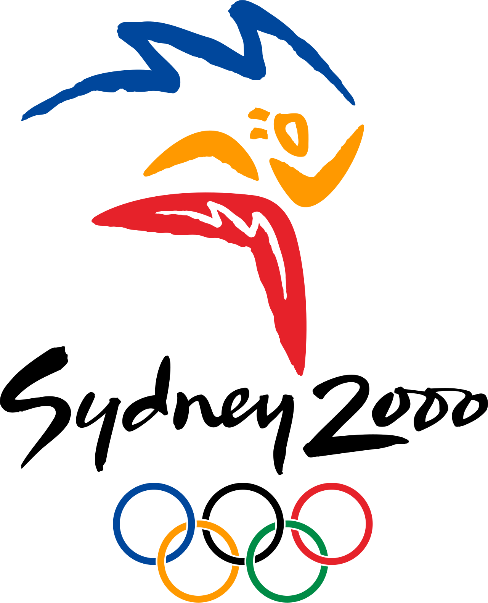
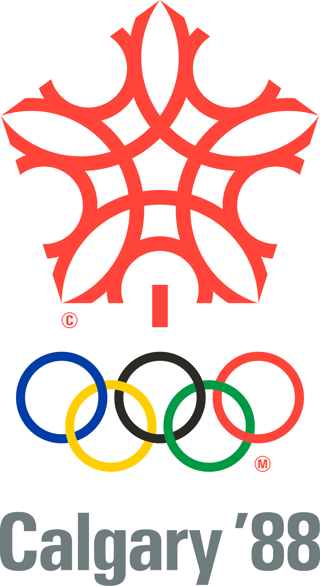

홈 > 브랜드 매거진 > Munich 1972
Munich 1972
1972년 여름 올림픽(제20회 올림픽)은 서독 뮌헨에서 개최되었다. 서독은 이 대회를 통해 1936년 베를린 대회의 권위적·국가주의적 인상에서 벗어나 민주적이고 낙관적인 전후 독일의 이미지를 제시하고자 했으며, 공식 표어는 '쾌활한 경기(Die Heiteren Spiele)'였다. 이러한 지향은 대회 전반의 시각 체계를 관통하는 출발점이 되었다.
산업 분야 스포츠·아웃도어 · 공개 등급 편집 검수 · 브랜드 평가 4 ★

한눈에 보는 브랜드
1972년 여름 올림픽(제20회 올림픽)은 서독 뮌헨에서 개최되었다. 서독은 이 대회를 통해 1936년 베를린 대회의 권위적·국가주의적 인상에서 벗어나 민주적이고 낙관적인 전후 독일의 이미지를 제시하고자 했으며, 공식 표어는 '쾌활한 경기(Die Heiteren Spiele)'였다.
이러한 지향은 대회 전반의 시각 체계를 관통하는 출발점이 되었다.
브랜드 관점
오틀 아이허(Otl Aicher)가 이끈 11부서(Dept. XI) 디자인팀은 타이포그래피·컬러·그리드·픽토그램을 하나의 모듈 체계로 묶어, 사인·인쇄물·머천다이즈·조경·도시계획까지 일관되게 통제했다.
핵심은 강제가 아니라 자유로운 변주를 허용하는 유연한 시스템이었고, 적색과 흑색을 배제한 무지개 팔레트로 1936년 베를린의 권위적 이미지에 대한 의도적 반대상을 세웠다. 모듈 그리드로 표준화한 픽토그램은 언어를 넘는 보편적 시각 언어를 제시해, 1974년 미국 교통부(DOT) 픽토그램의 직접적 토대가 되며 이후 전 세계 공공 사인 시스템으로 확산되었다.
행사 그래픽을 넘어 현대 통합 아이덴티티 설계의 원형으로 평가된다.
시작과 성장
뮌헨 대회 비주얼 아이덴티티는 1965년 무렵 착수되어 대회가 열린 1972년까지 발전했다. 조직위는 오틀 아이허에게 시각 디자인 책임을 맡겼고, 그는 1967년경 완성된 디자인 매뉴얼(‘시각 디자인을 위한 지침과 규범’)에 컬러·형태·서체의 운용 규칙을 집대성했다.
엠블럼은 코르트 폰 만슈타인(Coordt von Mannstein)의 방사형 화관(‘Strahlenkranz’) 안에서 빛·신선함·관대함을 상징하는 ‘빛나는 뮌헨’ 개념으로 정리되었다. 서체는 유니버스(Univers)로 통일해 공식 커뮤니케이션 전반에 단독 적용했고, 절제되고 경쾌한 톤을 유지했다.
픽토그램은 1964년 도쿄 대회 도상에 일부 기반하되 엄격한 모듈 그리드로 재구축되었으며, 마스코트 발디(Waldi)는 엘레나 슈바이거와 함께 실제 닥스훈트를 모델로 만들어 올림픽 사상 첫 공식 마스코트가 되었다.
브랜드 아이덴티티
1966년 디자인 책임자로 임명된 오틀 아이허(Otl Aicher)는 표지물·사인·출판물·상품·환경 그래픽에 이르는 포괄적 디자인 프로그램을 통합 매뉴얼로 정립했다. 색채 전략은 의도적으로 붉은색·검정·금색을 배제하고 하늘색을 평화를 상징하는 공식 색으로 삼았으며, 녹색·은색 등 바이에른 알프스를 연상시키는 밝고 경쾌한 색군을 채택해 1936년 대회의 인상과 단절을 꾀했다.
문자 체계로는 절제된 Univers를 선정했고, 엄격한 기하학적 모듈 그리드 위에 일정한 선 굵기로 구축한 스포츠·안내 픽토그램 체계는 이 프로그램의 핵심 성과로 평가된다. 광선이 퍼지는 나선형 엠블럼(Strahlenkranz)의 최종안은 공모를 거쳐 코르트 폰 만슈타인의 안이 선정되었으며, 자료에 따라 아이허와의 공동 작업으로 표기되기도 한다.
제품과 서비스
통합 아이덴티티의 산출물은 방사형 엠블럼, 무지개 컬러 팔레트, 모듈 그리드 기반 스포츠 픽토그램 세트, 유니버스 서체 적용 체계, 사인·웨이파인딩 시스템, 포스터, 그리고 줄무늬 닥스훈트 마스코트 발디로 구성된다. 발디는 약 50개 제조사에 라이선스되어 봉제·플라스틱 완구, 핀, 스티커, 포스터 등 이백만 점 이상 판매되었다.
사람들
현재 상태
아이허의 픽토그램 체계는 이후 전 세계 공항·역사·교통 시설의 안내 표지와 보편적 픽토그램 디자인에 지속적 영향을 미쳤으며, 단순성·기능성·포용성을 중시한 그의 통합 시각 체계는 이후 올림픽 브랜딩의 기준점으로 남아 있다.
타임라인
자주 묻는 질문
Munich 1972의 브랜드 아이덴티티는 무엇인가요?
1966년 디자인 책임자로 임명된 오틀 아이허(Otl Aicher)는 표지물·사인·출판물·상품·환경 그래픽에 이르는 포괄적 디자인 프로그램을 통합 매뉴얼로 정립했다.
Munich 1972의 대표 제품은 무엇인가요?
통합 아이덴티티의 산출물은 방사형 엠블럼, 무지개 컬러 팔레트, 모듈 그리드 기반 스포츠 픽토그램 세트, 유니버스 서체 적용 체계, 사인·웨이파인딩 시스템, 포스터, 그리고 줄무늬 닥스훈트 마스코트 발디로 구성된다.
Munich 1972는 현재 어떤 상태인가요?
아이허의 픽토그램 체계는 이후 전 세계 공항·역사·교통 시설의 안내 표지와 보편적 픽토그램 디자인에 지속적 영향을 미쳤으며, 단순성·기능성·포용성을 중시한 그의 통합 시각 체계는 이후 올림픽 브랜딩의 기준점으로 남아 있다.
함께 읽을 브랜드
 스포츠·아웃도어 · 자료 기반무니치(Munich)
스포츠·아웃도어 · 자료 기반무니치(Munich)무니치(Munich)는 측면 'X' 마크가 상징인 스페인의 스포츠화·스니커즈 브랜드이다.
Os
Osaka Candidate City 2008
스포츠·아웃도어 · 편집 검수Osaka Candidate City 2008Osaka Candidate City 2008는 2000년에 기록된 Olympic Design 계열의 브랜드 아이덴티티 사례입니다. Hakuhodo가 아이덴티티 작업...
 스포츠·아웃도어 · 편집 검수Prague Metro
스포츠·아웃도어 · 편집 검수Prague MetroPrague Metro는 1979년에 기록된 Transport 계열의 브랜드 아이덴티티 사례입니다. Jiří Rathouský가 아이덴티티 작업의 디자이너로 기록되어...
 스포츠·아웃도어 · 편집 검수Sarajevo 1984
스포츠·아웃도어 · 편집 검수Sarajevo 1984Sarajevo 1984는 1978년에 기록된 Sport 계열의 브랜드 아이덴티티 사례입니다. Miroslav Antonić Roko, Branko Bačanović...

스포츠·아웃도어 · 편집 검수Sydney 2000Sydney 2000는 1998년에 기록된 Olympic Design 계열의 브랜드 아이덴티티 사례입니다. FHA Image Design, Saunders Desig...
 스포츠·아웃도어 · 편집 검수아디다스(ADIDAS)
스포츠·아웃도어 · 편집 검수아디다스(ADIDAS)아돌프 다슬러가 1948년에 설립한 독일의 스포츠 브랜드로 운동화, 운동복, 운동용품 등을 제조 · 판매함. 아디다스의 정의 및 기원 아디다스(adidas)는 바이에...

스포츠·아웃도어 · 편집 검수Calgary 1988Calgary 1988는 1979년에 기록된 Olympic Design 계열의 브랜드 아이덴티티 사례입니다. Gary W. Pampu, Justason & Taven...
Me
Metro Bilbao
스포츠·아웃도어 · 편집 검수Metro BilbaoMetro Bilbao 는 1988년에 기록된 Transport 계열의 브랜드 아이덴티티 사례입니다. Otl Aicher가 아이덴티티 작업의 디자이너로 기록되어 있습...